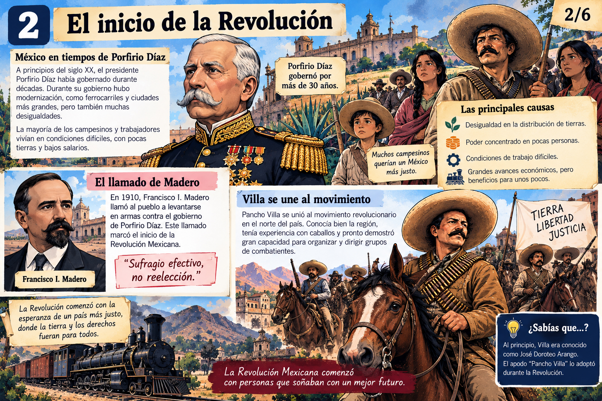

Capítulo 1
De Doroteo Arango a Pancho Villa
Su nombre original fue Doroteo Arango. Nació en Durango en 1878 y creció en un ambiente rural marcado por fuertes desigualdades sociales. Con el paso de los años adoptó el nombre con el que sería conocido en todo México: Francisco “Pancho” Villa.
Para pensar: ¿por qué una persona puede transformarse en símbolo político cuando representa problemas compartidos por muchas otras?